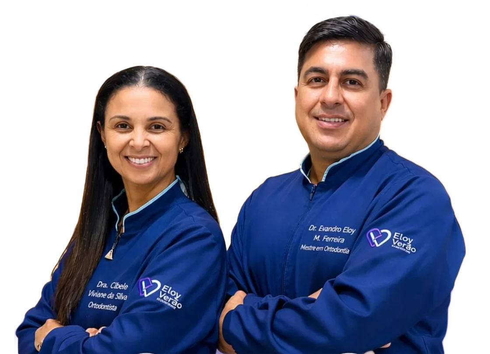
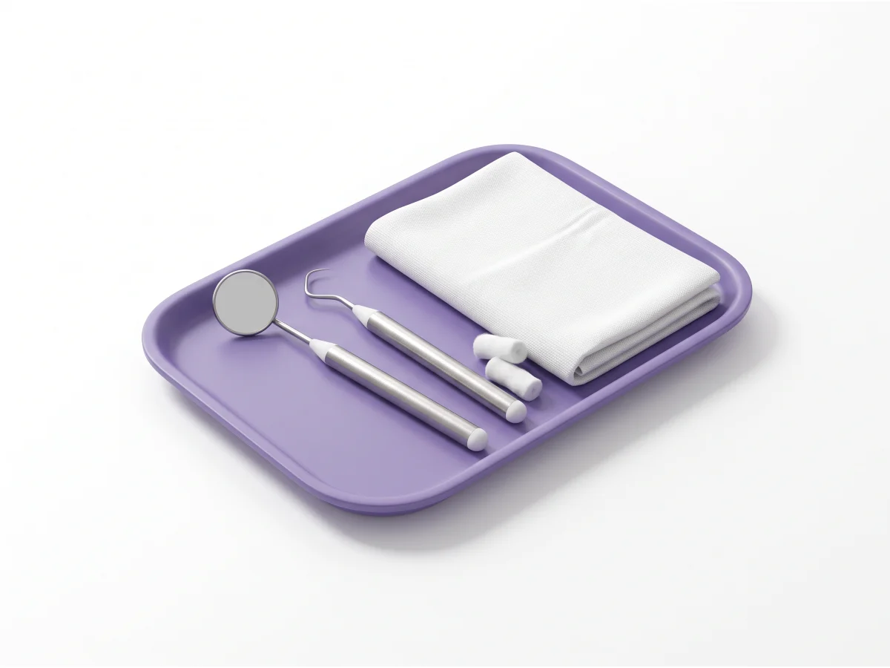
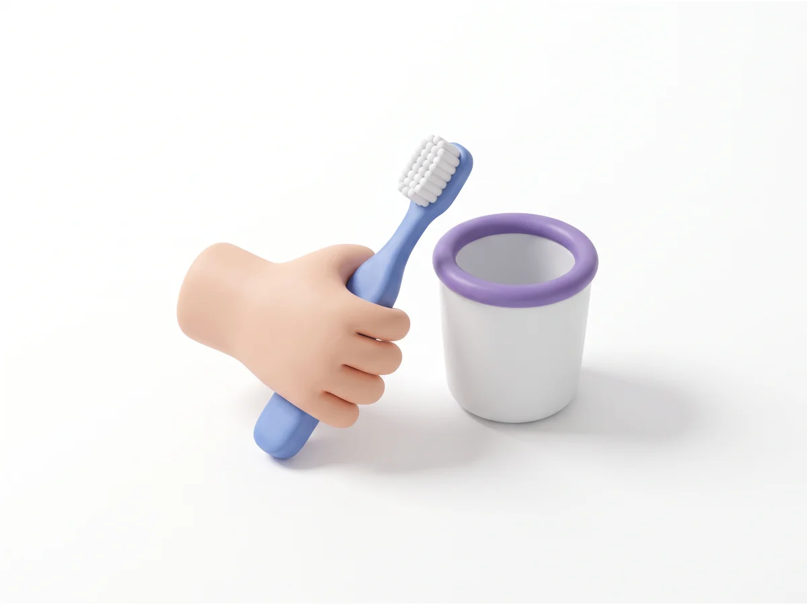
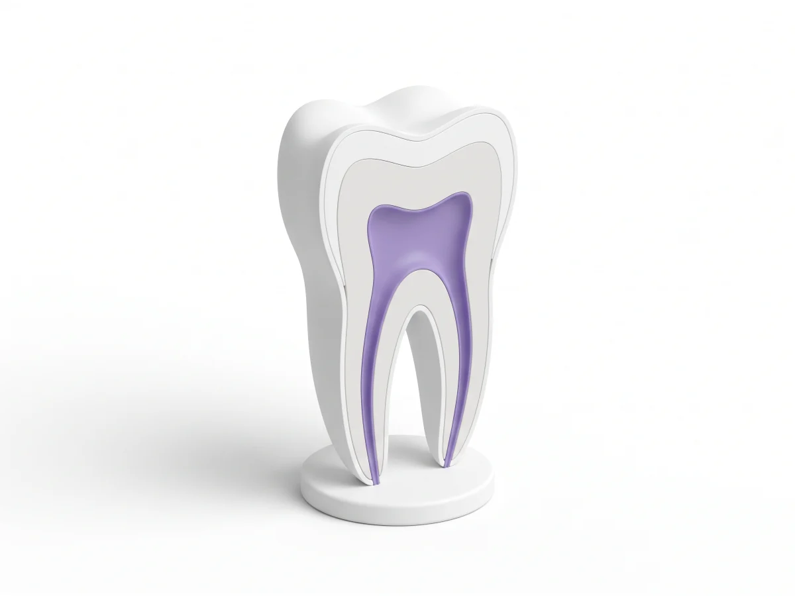
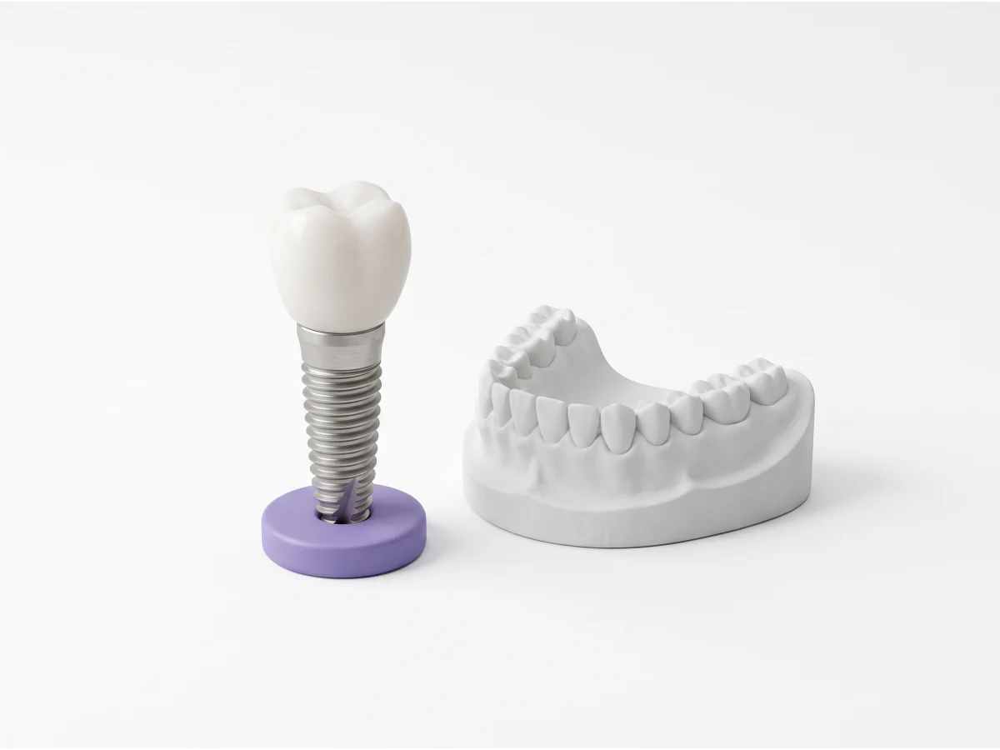
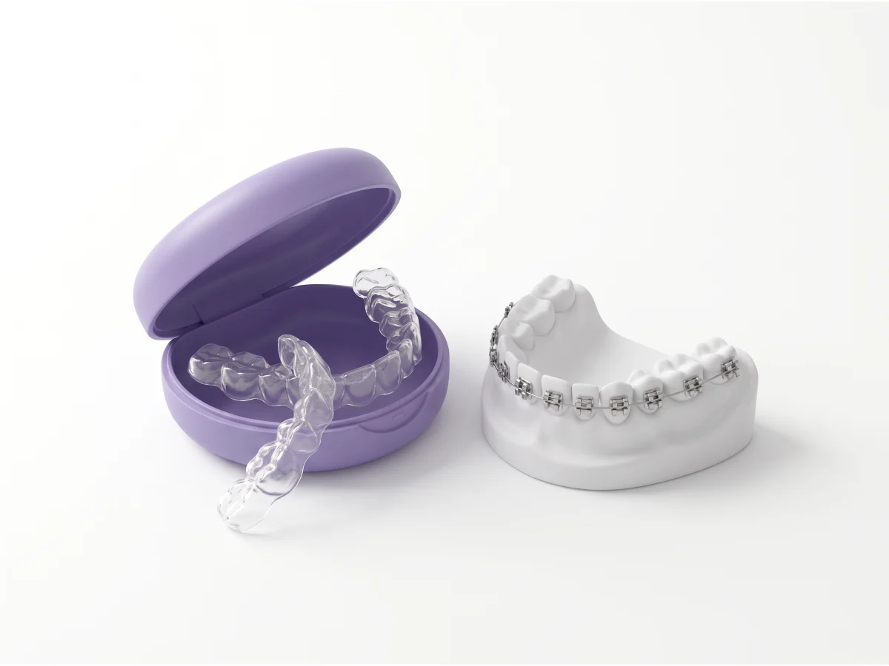
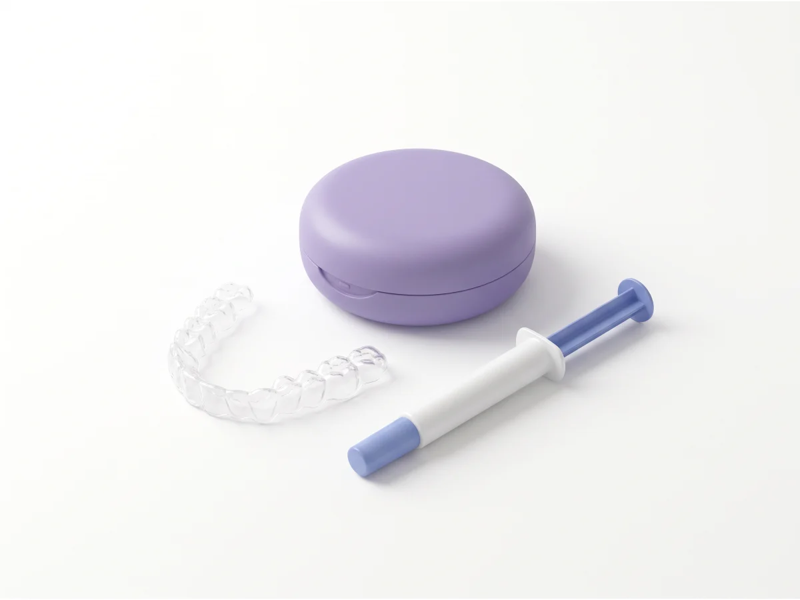
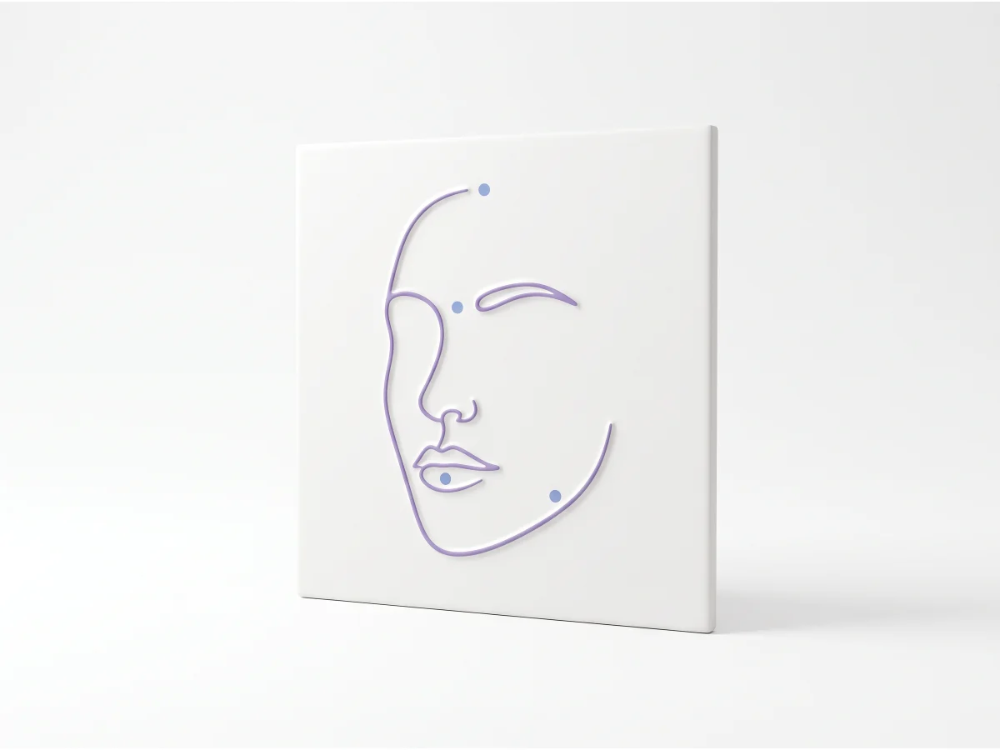
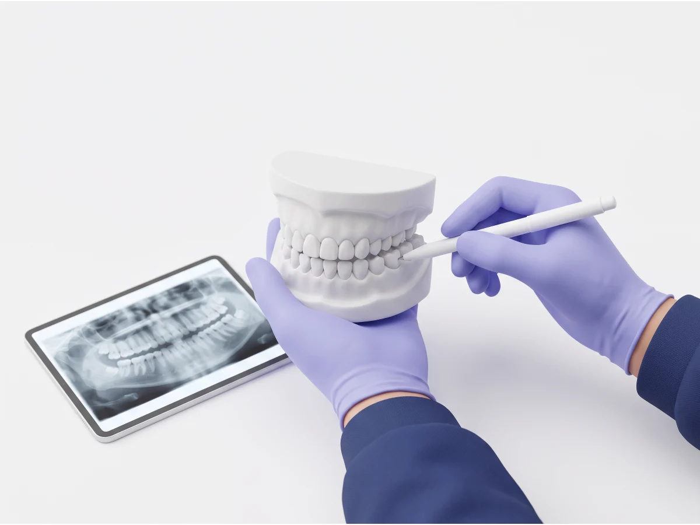

Dentista no Jardim Aricanduva · desde 2002 Aqui, dentista vira da família.
Tem paciente que se trata aqui há mais de 20 anos. A família toda num lugar só, pelo seu convênio ou particular.
4,7 · 130 avaliações no Google
Seu plano está aqui?
Atendemos 12 convênios e também particular. Toque no seu.
Toque no seu plano ao lado
O que a gente faz
Da primeira consulta das crianças ao implante dos avós, aqui no bairro.
Para o dia a dia da família
-

Consulta, limpeza e prevenção
Sem bronca: a gente vê como estão os seus dentes, limpa e diz por onde começar.
Marcar consulta -

Crianças
Da primeira consulta às revisões, com paciência para quem tem medo.
Marcar para uma criança -

Tratamento de canal
Quando a dor vem de dentro do dente: o canal limpa a raiz e mantém o seu dente.
Perguntar sobre canal
Para o que você vem planejando
-

Implante e prótese
Repõe o dente que falta, preso no osso, para mastigar sem medo. Implante, prótese, ponte ou dentadura: na avaliação você vê o plano etapa por etapa.
-

Aparelho e alinhador
Aparelho fixo ou alinhador transparente: na avaliação você vê qual serve para o seu caso.
Quero avaliar aparelho -

Clareamento
Dentes mais claros, com acompanhamento da dentista do começo ao fim.
-

Harmonização orofacial
Toxina botulínica, preenchimento e bioestimulador. Na avaliação, você fala do que quer, e do que não quer.
Imagens ilustrativas.
Casos de pacientes daqui
Fotos que a própria clínica publicou. Arraste a linha para comparar o antes e o depois.


Casos reais da clínica. Na versão oficial, cada caso entra só com a autorização do paciente.
Quem vai te atender
Cada um cuida de uma parte do seu tratamento.
-
Dr. Evandro Eloy
Ortodontia
-
Dra. Cibele Viviane da Silva
Ortodontia
-
Dra. Giovanna Diniz
Clínica geral, crianças e clareamento
-
Dra. Bruna Okuyama
Harmonização orofacial
-
Luciana
Técnica em saúde bucal
O que os pacientes dizem
Avaliações públicas no Google, com as palavras de quem escreveu.
4,7de 5 no Google
Atendimento maravilhoso. Profissionais de excelência. Sou paciente há mais de 20 anos e super indico.
-
cristinahá 3 anos
“A dentista Cibele é espetacular! Carinhosa, cuidadosa e se importa muito com o paciente. […] a Dra Cibele já é dentista da família e será dos amigos também.”
-
Renatahá 2 meses
“Dra Giovanna sensacional com crianças. Uma paciência enorme e bem delicada.”
-
Cynalvahá 2 meses
“[…] Hoje em especial a técnica Luciana amei parabéns pelo trabalho que faz com dedicação.”
-
Guinahá 2 meses
“Ótimo atendimento, ambiente muito confortável e seguro”
Como é a primeira consulta
Sem surpresa e sem pressa para decidir.
-
Em casa, antes
Você conta o que procura.
Olá! Sou Ana e quero marcar: consulta e limpeza.
Vim pelo site da Unidade São Paulo (Jardim Aricanduva).
Convênio: Hapvida
Melhor período: manhã
Obrigado!
A recepção confirma o horário com você.
-
Na cadeira
A dentista examina e explica as opções, e o valor, se for particular.

-
Em casa, depois
Você decide com calma, em casa, se quiser.
Ninguém precisa fechar nada na hora.
Antes de marcar
Não achou a sua dúvida? Pergunte na mensagem
Quanto custa?
Depende do tratamento e do seu caso. O valor sai na avaliação, e você decide depois, sem compromisso de fechar na hora.
Meu plano cobre tudo?
A cobertura muda de plano para plano e de tratamento para tratamento. Escolha o seu plano na mensagem, e a recepção confirma pelo WhatsApp o que ele cobre no seu caso. Sem plano, também atendemos particular.
Tenho medo de dentista. Como é?
Conta isso na mensagem: a dentista vai com calma e explica cada passo antes.
Atendem crianças?
Sim. A Dra. Giovanna Diniz atende crianças. Na mensagem, marque “Para uma criança”.
Abre aos sábados?
Sim, das 9h às 14h. De segunda a sexta, das 9h às 19h.
Esta é a Eloy Verão de Dourados?
Não. Este site é da Unidade São Paulo, no Jardim Aricanduva. A Eloy Verão também tem uma unidade em Dourados (MS), com outro endereço e outro WhatsApp.
Conta o que você procura. A mensagem já vai pronta.

Rua Antônio La Giudice, 345 · Jardim Aricanduva, São Paulo
Como chegar